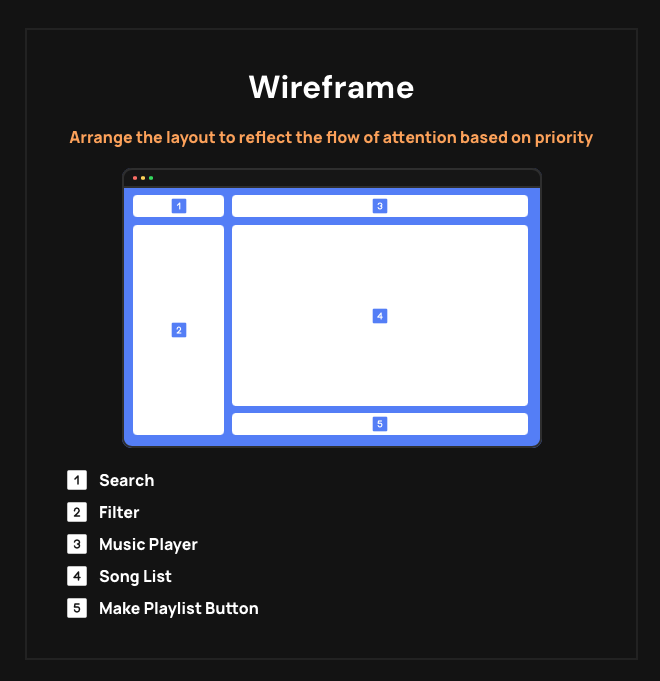
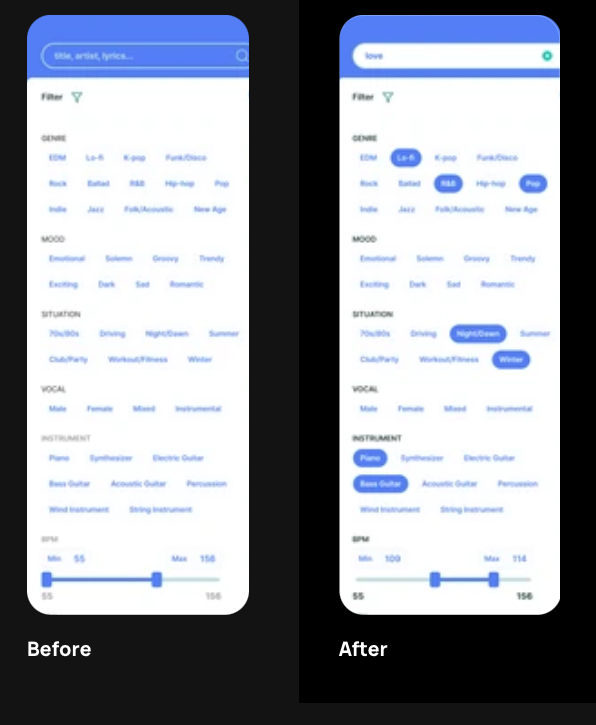
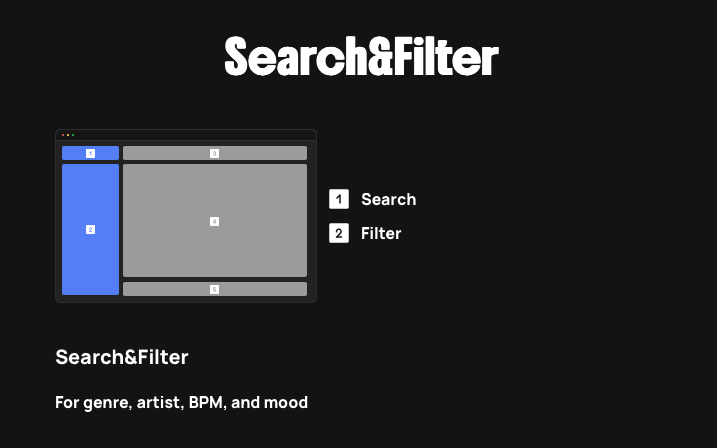
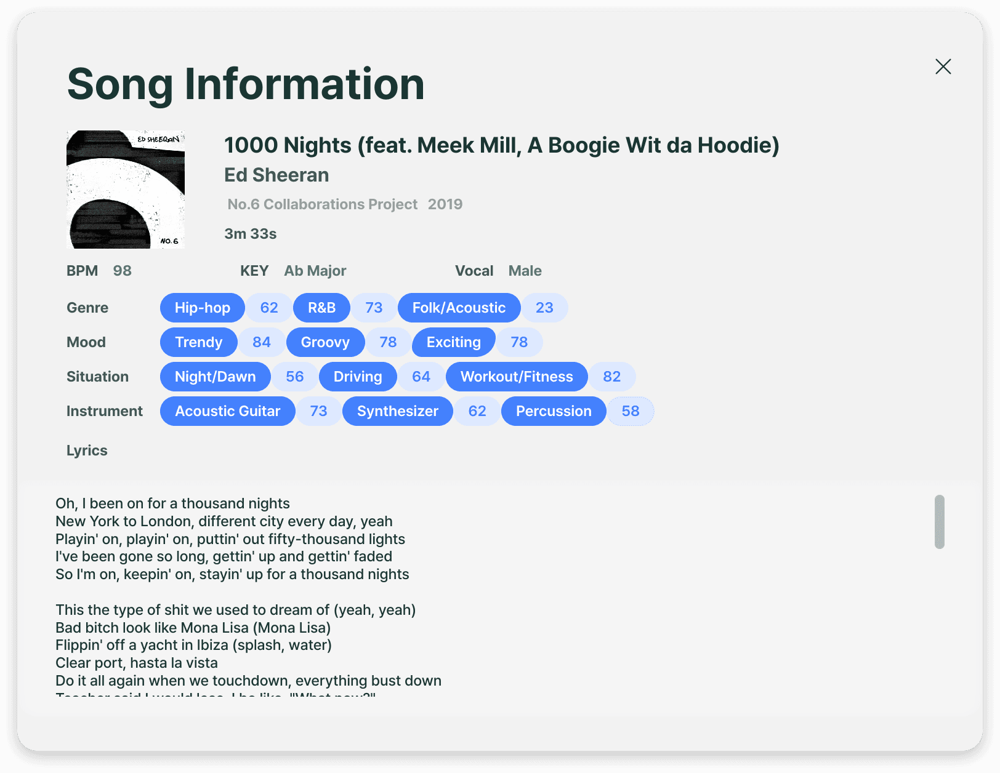

출발 조건
음원 카탈로그, AI 분석 기술, 사업 가능성. 무엇을 제품으로 만들 것인지부터 정해야 했어.
클라이언트의 음원 활용 과제와 연구 중인 AI 기술을 연결해, 음악 탐색부터 플레이리스트 생성까지 제품 경험으로 구체화했어.
음원 카탈로그를 보유한 클라이언트는 IP의 새로운 활용 가능성을 탐색하고 있었어. 동시에 AI 연구팀은 곡의 특성을 분석하고 있었지. 내 과제는 분석값을 화면에 배치하는 걸 넘어, 이 두 자산을 사용자가 이용할 제품 경험으로 연결하는 것이었어.
제품·사업 기회 탐색. 수익화 실증은 아직 아니야.
장르·무드·BPM·유사곡 기반 탐색. 연구 중 출력값은 변할 수 있었어.
곡을 비교하고 플레이리스트로 묶기. 검증된 니즈가 아닌 설계 가설이야.
조건 검색 또는 기준 곡에서 시작해 후보 확인·생성·저장으로 이어지는 흐름.
제품 정의 논리를 재구성한 설명도야. 시장 수요 검증이나 AI 모델 자체 개발을 주장하는 자료는 아니야.
클라이언트에게 음원 자산이 있고 연구팀에 분석 기술이 있어도, 그것만으로 사용자 문제나 제품 경험이 정해지진 않아.
사업 기회·AI 기술·사용자가 할 행동을 분리해서 제품 방향을 살펴봐. 실제 디자인 범위에서는 조건 검색과 유사곡 탐색을 청취·생성·저장 여정으로 연결했어.
플레이리스트라는 일관된 흐름을 선택해 제품 형태를 갖췄지만, 그것이 최선의 사업 기회이거나 추천 정확도가 높다는 뜻은 아니야.
이 세 관점은 현재 사례를 설명하기 위한 분석 틀이야. 당시 팀이 공식 명칭의 프레임워크를 썼거나 모든 제품 대안을 실제 검토했다는 뜻은 아니야.
사용자는 장르·무드·BPM 조건으로 탐색하거나, 기준 곡과 비슷한 음악을 찾는 방식으로 시작할 수 있었어. 이 두 경로를 탐색 → 곡 정보·청취 → 선택 → 생성 → 저장으로 연결했어.
유일한 디자이너로 제품 인터페이스와 인터랙션을 설계했고, AI 연구·개발팀과 출력값 및 구현 가능성을 확인했어. 제품 방향은 팀과 함께 구체화한 것이지 내가 혼자 사업 전략을 결정했다는 뜻은 아니야.

이 케이스에서 보여주는 범위는 음악 탐색, 추천곡 확인, 생성된 플레이리스트 저장이야. 과금 모델, 추천 정확도, 고객 채택 여부까지 이 PoC가 검증했다는 주장은 하지 않아.
각 결정이 화면에 어떻게 반영됐는지 따라가 봐.
음원 카탈로그, AI 분석 기술, 사업 가능성. 무엇을 제품으로 만들 것인지부터 정해야 했어.
조건 또는 기준 곡으로 탐색하고, 곡을 확인한 뒤 플레이리스트를 생성·저장하는 흐름으로 구체화했어.
검색·필터·곡 목록·플레이어·생성 액션을 연결해, 사용자가 해야 할 행동을 화면 영역으로 옮겼어.
연구·개발팀과 모델 출력과 구현 가능성을 확인했어. 무드 정보는 선별하고, 추적할 수 없는 진행률은 처리 중 피드백으로 바꿨어.
설계가 곡 탐색·생성·관리 화면으로 이어졌어. 아래는 기존 포트폴리오의 제품 화면이며, 사용자 효과가 검증됐다는 의미는 아니야.
구조가 만들어지는 장면은 설명용 재구성이며 당시 와이어프레임 원본은 아니야. 마지막 화면은 기존 포트폴리오 자료야.
여기 제시한 PoC 제품 범위와 향후 B2C 사업 모델은 구분돼. 후자의 사업적 타당성이 검증됐다는 뜻은 아니야.
검색과 필터로 탐색 범위를 정하고, 곡 목록과 플레이어로 후보를 비교한 뒤, 생성 액션으로 플레이리스트를 완성하게 했어. 화면 영역마다 맡는 행동을 분명히 했지.
조건 선택 전과 후의 화면 상태도 구분했어. 이는 개선 전후의 성과 비교가 아니라 동일한 제품의 서로 다른 인터랙션 상태야.


근거: 기존 프로젝트 화면 자료. 두 상태의 사용성 우열을 입증한 통제 실험은 없어.
추천 목록이 나와도 사용자는 어떤 곡을 들을지 결정해야 해. 모든 AI 출력값을 보여주기보다 Romantic·Spring·Soft 같은 무드 단어로 곡의 성격을 훑어보게 설계했어.
곡 목록의 비교 가능성을 위해 연관성이 높은 무드 3개를 노출하는 방향을 택했어.
연관성에 따라 정렬
상위 3개 무드 노출

모델 → UI 다이어그램은 설명용이며 실제 점수 데이터가 아니야. 기존 포폴의 게이지는 의미가 다른 지표일 수 있으므로 동일한 점수라고 단정하지 않았어.
생성 중 단계를 표시하는 방식을 고려했지만, 개발팀 확인 결과 백엔드가 신뢰할 수 있는 처리 단계를 제공하지 못했어. 단계를 나눠 보여주면 존재하지 않는 정확도를 약속하는 셈이었지.
그래서 처리 중이라는 사실만 전달하는 Lottie 반복 애니메이션을 선택했어. 남은 시간을 알 수 없는 상황에서 과도한 약속을 피한 설계였어.
단계별 추적이 가능해야 하는 표현
처리 중 · 진행률을 약속하지 않는 피드백
아래 애니메이션은 판단 원리 재현이며 당시 Lottie 원본 파일은 아니야.
곡 탐색부터 플레이리스트 생성·관리까지 하나의 흐름으로 설계했어.
검색과 필터로 곡을 찾고, 곡 정보를 살펴본 뒤 생성 모달에서 기준 곡과 곡 수를 지정할 수 있었어. 저장한 결과는 플레이리스트 페이지에서 다시 찾아 들을 수 있도록 했지.
아래는 기존 포트폴리오에 수록했던 제품 화면이야. 무드 상위 3개 규칙과 로딩 애니메이션의 상세 구현은 앞의 설명도와 구분해서 봐줘.


다학제 팀의 유일한 제품 디자이너로 PoC·MVP의 탐색 → 비교 → 생성 → 저장 경험과 AI 정보·로딩 피드백을 설계했어.
제품 화면, 두 가지 탐색 방식, 곡 선택 단서, 처리 중 피드백.
고객 수요, 추천 적합도, 재방문, 수익화, 무드 3개 노출의 우수성.
다음 검증: 무드 단서 유무에 따른 곡 선택 과제 테스트와 플레이리스트 완성·재사용 행동 측정. 실제 진행한 연구가 아니라 다음 검증 제안이야.
새로운 AI 제품을 설계할 때도 먼저 사용자가 내려야 할 결정부터 정할 거야. 모델이 신뢰할 수 있게 제공하는 정보만 골라내고, 도움이 되지 않는 기술적 수치는 줄이겠어. 처리 과정은 실제 시스템이 아는 만큼만 알려주고, 최종적으로 과업 수행에 도움이 되는지 검증할 거야.
기존 포트폴리오 수록 화면과 판단 과정을 설명하는 재구성을 함께 사용했어. 각 자료의 범위는 캡션에 표시했어.